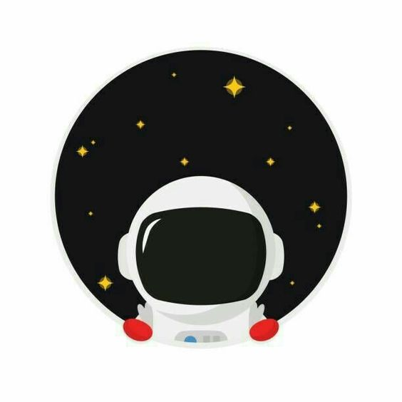
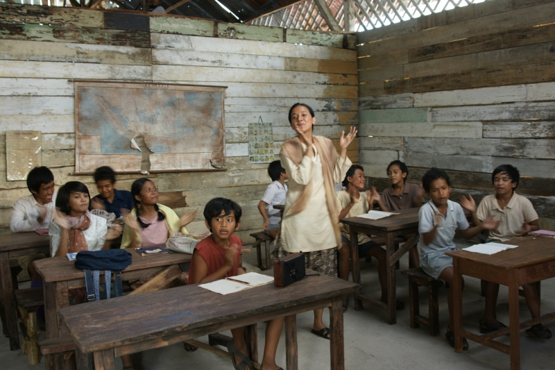
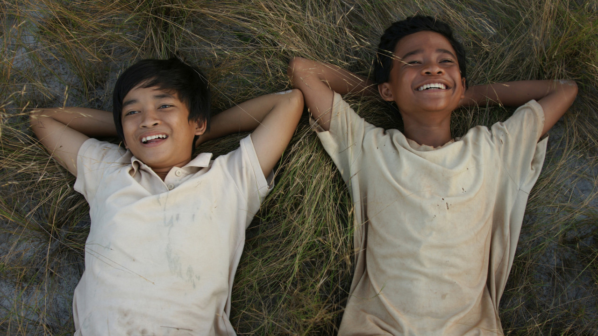
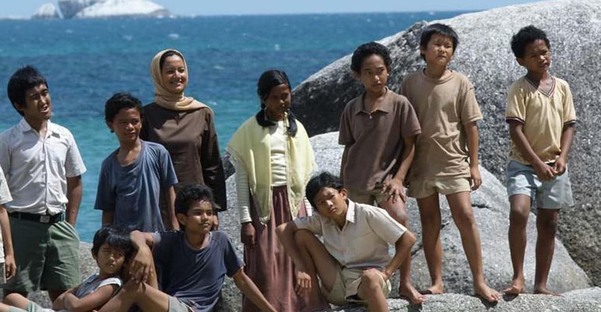

ShilNg
CHIẾN BINH CẦU VỒNG
Chiến binh cầu vồng (14/09/2022, Thứ 4)
Mình vừa đọc lại cuốn ‘Chiến binh cầu vồng’, muốn lưu lại cảm xúc của mình sau khi mình đọc nó lần thứ hai.
Ngôi trường sắp bị đóng cửa
Cuốn sách bắt đầu cùng với sự khởi đầu tiếp cận tri thức của mười cô cậu học trò nhỏ. Ngày khai trường của trường Muhammahdiya, ngôi trường đang kề cận với nguy cơ bị đóng cửa nếu không có đủ mười học sinh mới cho năm học mới này. Sự thấp thỏm và lo lắng của cô gái trẻ ước mơ được làm cô giáo, và người thầy giáo già đã gắn bó với ngôi trường này cả cuộc đời. Trong sự chờ đợi – vì đã đến hơn 10 giờ mà mới chỉ có chín học sinh, mỗi một gia đình, một đứa trẻ lại có những cảm xúc khác nhau. Đứa nhóc tên Sahara thì nức nở vì sợ sẽ không được đi học, một vài vị phụ huynh có lẽ thấy dễ thở hơn vì con cái họ sẽ không đến trường, mà thay vào đó là đi làm culi để kiếm chút tiền phụ giúp gia đình. Đợi đến 11 giờ hơn, thầy Harfan cuối cùng cũng nén niềm đau, đọc diễn văn đóng cửa nhà trường. Nhưng ô kìa, lúc thầy đang phát biểu với những giọt nước mắt thì từ xa có một người phụ nữ, dắt đứa con của mình tới, đó là Harun, và thế là Harun chính là tấm vé để tất thảy 10 đứa bé được tới trường, cố Mus được làm cô giáo và thầy Harfan lại tiếp tục niềm đam mê mà thầy đã gắn bó cả cuộc đời. Ngôi trường này là ngôi trường do chính tay thầy Harfan dựng lên.
Mười chiến binh cầu vồng
Harun – anh hùng của các chiến binh cầu vồng thực ra là một cậu bé bị thiểu năng. Cậu yêu thích con số ba và câu chuyện về con mèo tam thể đẻ được 3 con, có ước mơ trở thành Trapani. Sahara, một cô bé lém lỉnh, học giỏi địa lý. A kiong, con của người Trung Quốc, cậu ta có cái đầu hình vuông, đôi mắt hí. Sahara và A kiong được cô Mus xếp ngồi cạnh nhau, và hai cô cậu thì như ‘chó với mèo’. Trapani, cậu chàng đẹp trai, sáng sủa nhất lớp. Borek, hai cậu chàng đều nghịch như quỷ sứ. Kucai, lớp trưởng, cậu nhóc có đầu óc ngu xi, nhưng lại không biết xấu hổ và là ứng của viến sáng giá cho vị trí nào đó liên quan tới chính trị. Lintang, cậu bé là con của một ngư dân, thông minh tuyệt đỉnh, cậu có thể tính các bài toán tích phân hóc búa chỉ trong vài giây khi mới học cấp 2. Mahar, thằng nhóc tin vào những điều huyền bí, ma quỷ, có niềm tin tuyệt đối vào các phù thủy. Cậu ta có giọng hát tuyệt vời, trí tưởng tượng phong phú, và A kiong chính là đệ tử ruột của Mahar. Ikal, tác giả của cuốn sách, con của một culi PN, cậu luôn đứng thứ 2, sau Litang trong lớp học. Giấc mơ của cậu là trở thành nột nhà văn, học một tuyển thủ cầu lông. Kế . hoạch B của cậu là viết một cuốn sách về cầu lông,Và một nhân vật nữa mà mình không nhớ tên, cậu ta là bạn thân của Ikal, người đã giúp Litang theo đuổi tình yêu đầu đời bằng những lần đi mua phấn, cậu ta luôn là người bi quan nhất, ước mơ của cậu ta chỏ là trở thành người soát vé của rạp chiếu phim.
Đảo Belitong
Đảo Belitong, hòn đảo giàu có nhất Indonesia, vì trong lòng nó chứa đầy thứ thiếc quý giá. Mà thứ thiếc ấy lại thuộc về chính quyền và những ông lớn, trong khi người dân bản địa trên đảo Belitong – hòn đảo giàu nhất Indonesia này lại nghèo xác xơ. Họ chỉ làm culi cho các mỏ thiếc và làm các công việc thấp kém nhất trên hòn đảo giàu có ấy. Đối nghịch với khu ổ chuột của người dân bản địa là những tòa lâu đài của các ông chủ PN. Đối lập với ngôi trường sắp xụp của thầy Harfan, cô Mus và 10 chiến binh cầu vồng là ngôi trường PN khang trang và giàu có.
Chiến đấu
Trải qua hết khó khăn này đến khó khăn khác. Từ việc không có cả quần áo gọn gàng để mặc, không có đủ đồ dùng học tập. Cơ sở trường lớp thì xệp xệ. Chuyện Litang phải dậy từ 4 giờ sáng, đạp xe, đi bộ, vượt qua khu rừng có lũ có sấu đáng sợ để tới kịp giờ lên lớp. Chuyện ngôi trường thường xuyên bị đe dọa đóng cửa. Rồi chuyện nhờ Mahar mà ngôi trường Muhammahdiya lần đầu tiên giành được cup trong cuộc thi hóa trang – nơi mà trường PN luôn giành giải quán quân. Chuyện Litang xuất sắc chinh phục đỉnh cao kiến thức để giành về cho trường chiếc cup học sinh giỏi. Chuyện yêu đương của cậu Ikal, chuyện đi mua phấn, chuyện lễ giật đồ rồi đến chuyện thất tình của cậu. Chuyện một con nhỏ chuyển từ trường PN sang trường Muhammahdiya vì được 10 chiến binh cầu vồng giải cứu, và vì quá mê Mahar và những câu chuyện điên rồ của nó, con nhỏ ---. Rồi tới chuyện thầy Harfan mất, các học sinh lần lượt nghỉ học đi làm culi, rồi cô Mus cũng nản chí vì nghĩ trường sẽ bị PN phá nát để đào cái thứ thiếc quý giá nằm dưới ngôi trường xập xệ này. Cuối cùng chỉ còn lại Litang và 5 đứa nữa cố bám trụ. Cô Mus cũng nhìn ra được niềm tin của các học trò của mình, cô quay lại, tất cả lại quay lại, đủ 10 chiến binh cầu vồng. Nhưng rồi tới lượt Litang nghỉ học vì ba của cậu mất, cậu phải lo gánh vác gia đình, và thế là cậu từ bỏ chuyện học hành, từ bỏ theo đuổi tri thức. Đây là điều mà mình tiếc nuối nhất, tại sao lại phí hoài một tài năng như vậy. Tại sao lại chẳng ai tìm ra và giúp đỡ cậu, và cậu cũng chẳng tự vượt lên chính mình mà lại để bị số phận đánh gục, để rồi trở thành một người lái xe cát gầy gò.
Lời kết
Câu chuyện kết thúc không khiến mình rất buồn, vì những điều mình mường tượng tương lai của 10 chiến binh cầu vồng, cô Mus và thầy Harfan khi đọc cuốn sách, đã không xảy ra. Đúng thật kucai đã trở thành ứng cử viện hạng ba của chính quyền. Sahara và A kiong lấy nhau, họ có một cửa hàng. Cậu bạn thân của Ikal thì trở thành một anh bốc hàng thuê. Trapani thì bị điên và ở trong trại tâm thần cùng mẹ cậu ấy. Cuối cùng chỉ còn lại Ikal là chạm đến được ước mơ của mình.
Cuộc sống là thế, có rất nhiều những thứ để ảnh hưởng đến giấc mơ, ước mơ của mình. Ta không thể biết được tương lai mình sẽ thế nào, mình sẽ trở thành người ra sao. Thực sự đọc đến những trang cuối mình đã rất buồn, vì nó cũng là sự thực. Đã không có phép màu nào xảy ra cho bất cứ mảnh đời nào. Đam mê thời thơ bé rồi cũng có khi phải gác lại, và cuộc đời đưa ta đến những hướng rẽ khác. Nhưng sau cùng thì, giáo dục cũng đã mở cho họ một con đường, để họ biết rằng mình cần phải có một tương lai khác hơn.